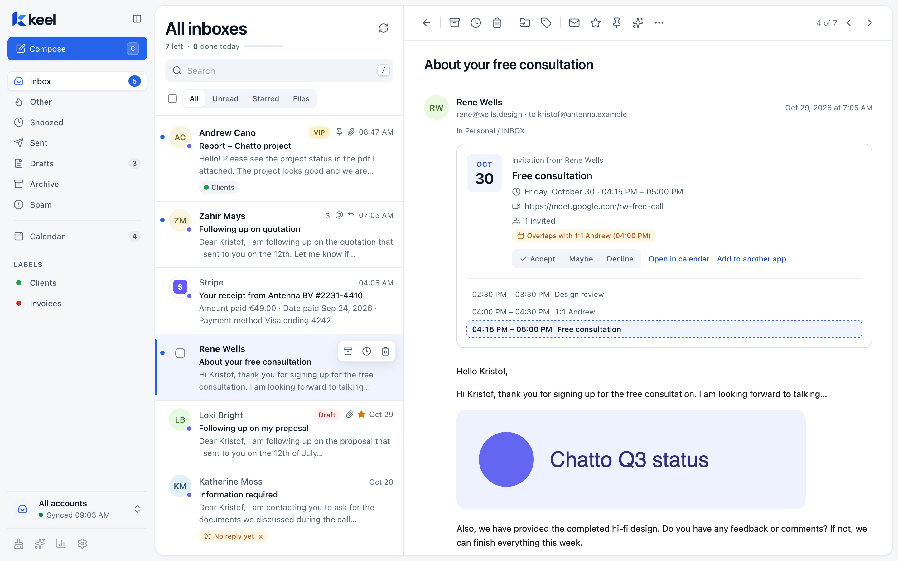
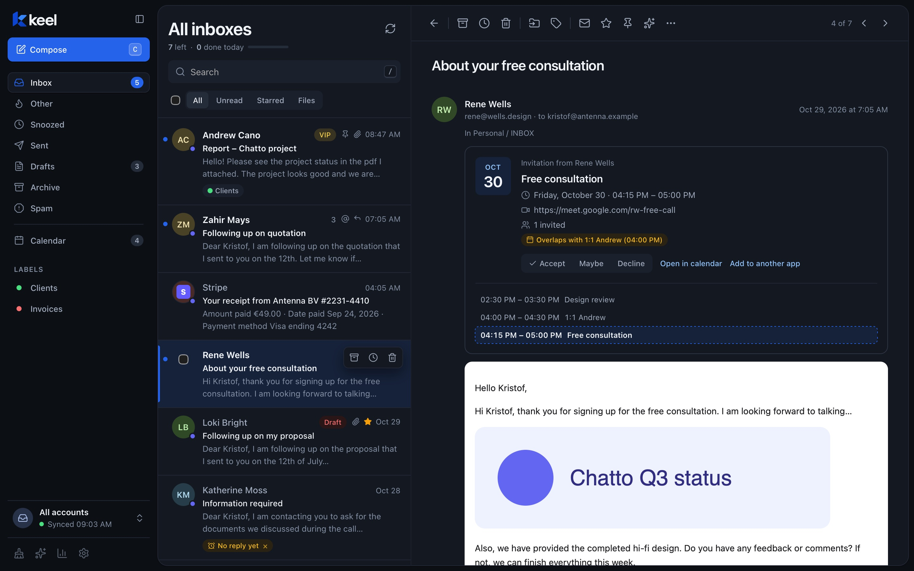
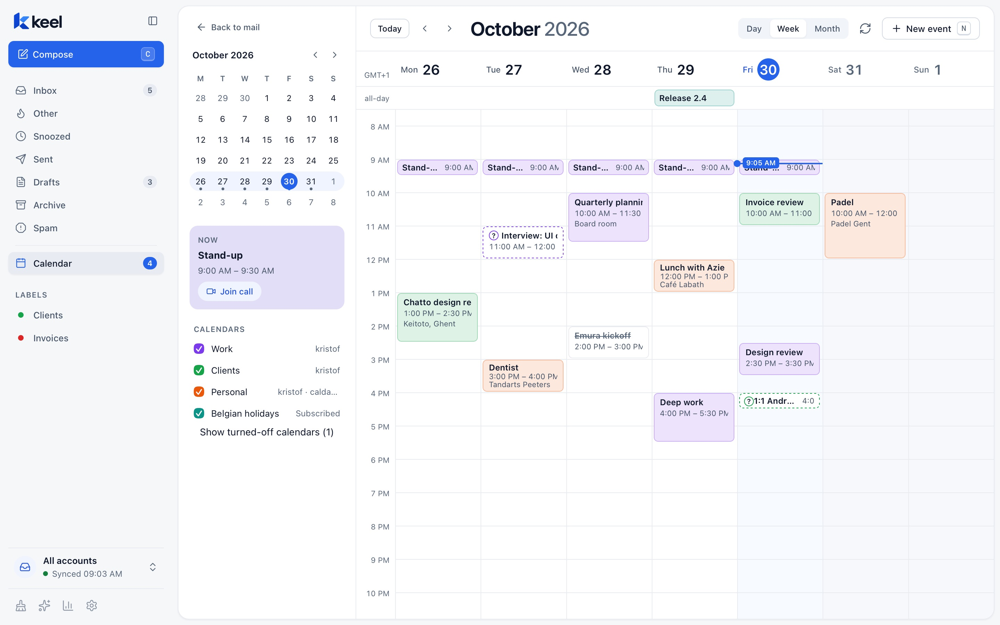
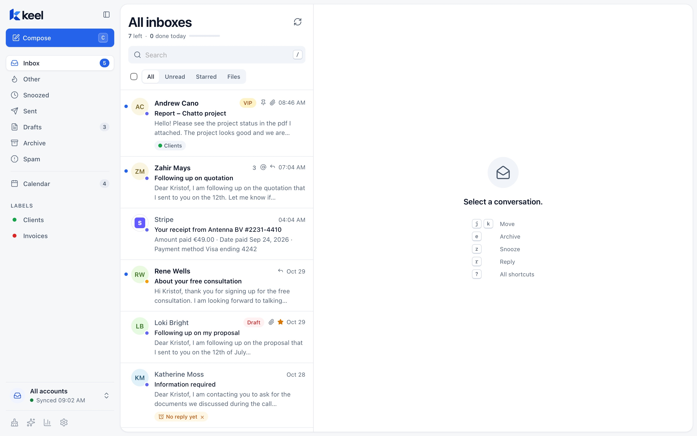
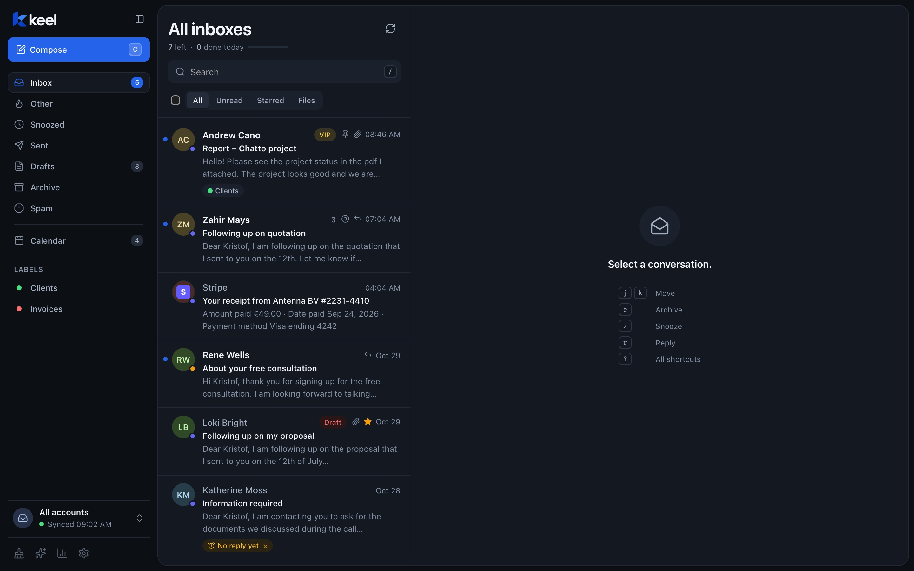

Every inbox in one calm place. Nothing leaves your Mac.
Keel brings Gmail, Microsoft 365, iCloud and any IMAP account into one fast, keyboard-first app, with your calendar right next to it. No Keel account, no cloud in between, no tracking.


Less sorting, more done.
Keel moves the noise out of your way and gives every action a key, so a busy inbox is cleared before your coffee goes cold.
All inboxes in one
Work, personal and side projects side by side. Replies go out from the address the mail was sent to, automatically.
Focused first
Newsletters, notifications and no-reply senders land in Other. People you write to always stay in Focused.
Keyboard-first
j k to move, e to archive, r to reply. Rebind any shortcut, and ⌘Z undoes.
Instant search, offline
Every message is indexed on your Mac. Search all accounts at once with from:, to:, subject: and account:.
Snooze and undo send
Snooze a thread until you need it. Every send waits a few seconds, so the typo you spot at the last moment never goes out.
Unsubscribe in one click
The Cleaner groups your inbox by mailing list and sender. Unsubscribe, archive or trash a whole sender at once.
Your calendar, next to your mail.
Google, Microsoft, iCloud and any CalDAV calendar in day, week and month views. Invitations show up as a card with your day around them, so you see the clash before you say yes.
- Accept, Maybe or Decline straight from the mail
- Overlapping meetings flagged on the invitation
- Join the video call from the event

Your mail is yours. Keel just reads it for you.
Most mail apps route your inbox through their own servers. Keel doesn't have any. It talks straight to your mail provider and keeps everything on your Mac.
- No Keel account, no telemetry, no analytics
- Passwords and sign-in tokens in the macOS Keychain
- Remote images and tracking pixels blocked until you allow them
- PGP and S/MIME encryption built in
- AI stays off until you turn it on, with a provider you pick (local models too)


The details you notice on day two.
Rules
File, label, star or mark new mail as it arrives. Blocking a sender is one click.
AI when you want it
Thread summaries, reply drafts, rewrites and "ask your mail", with OpenAI, Ollama, Claude Code or Codex. Results always open as editable text.
Works offline
Archive, move and reply on a plane. Keel queues it and catches up when you're back online.
Your data, exportable
Export everything to standard mbox files that Apple Mail and Thunderbird can open.
Light and dark
Theme, text size, density and preview lines to taste. In English and Dutch.
Works with your assistant
Let Claude or Codex search and draft your mail over MCP, with access you control and a log of every call.
Try Keel.
Keel is in early access for macOS. Send a short mail and you'll get a build plus a hand with setup.